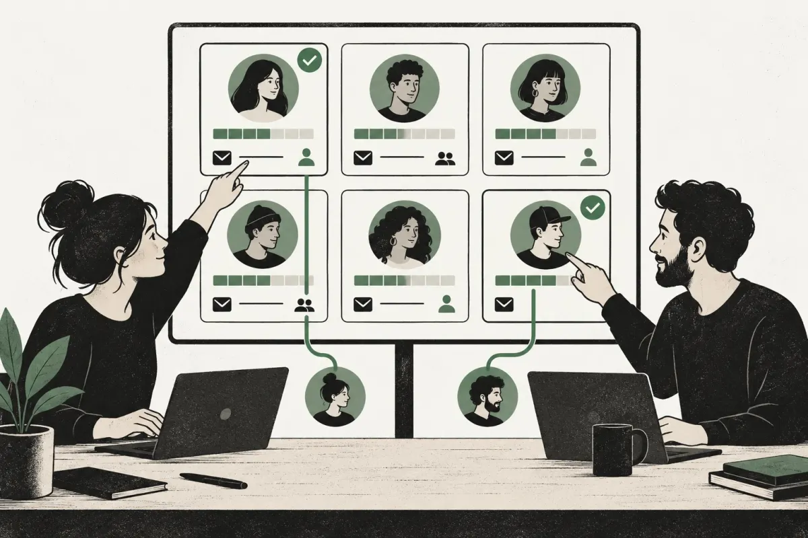
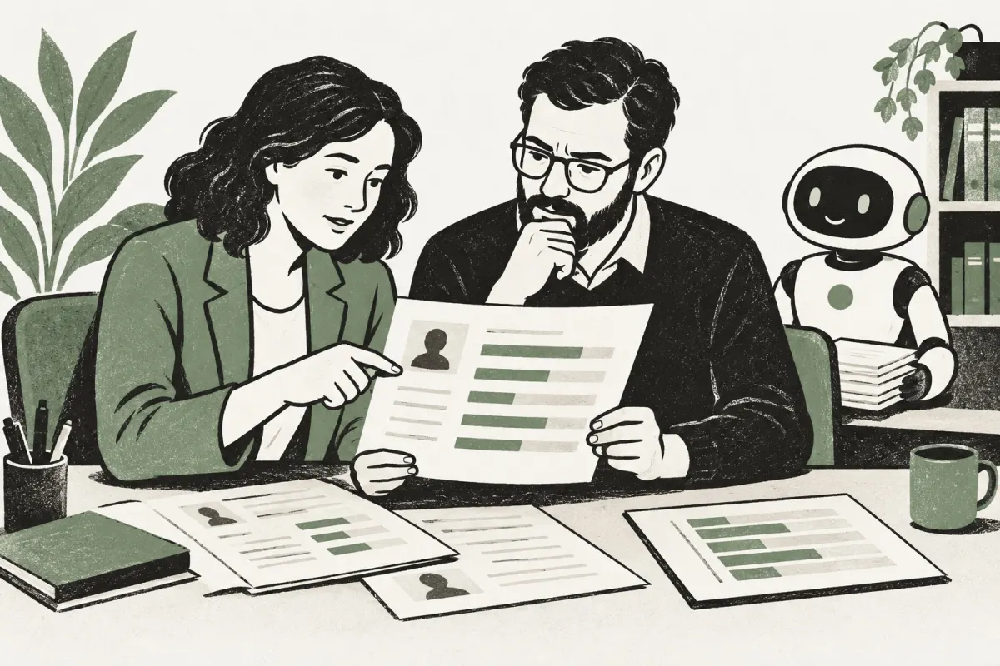
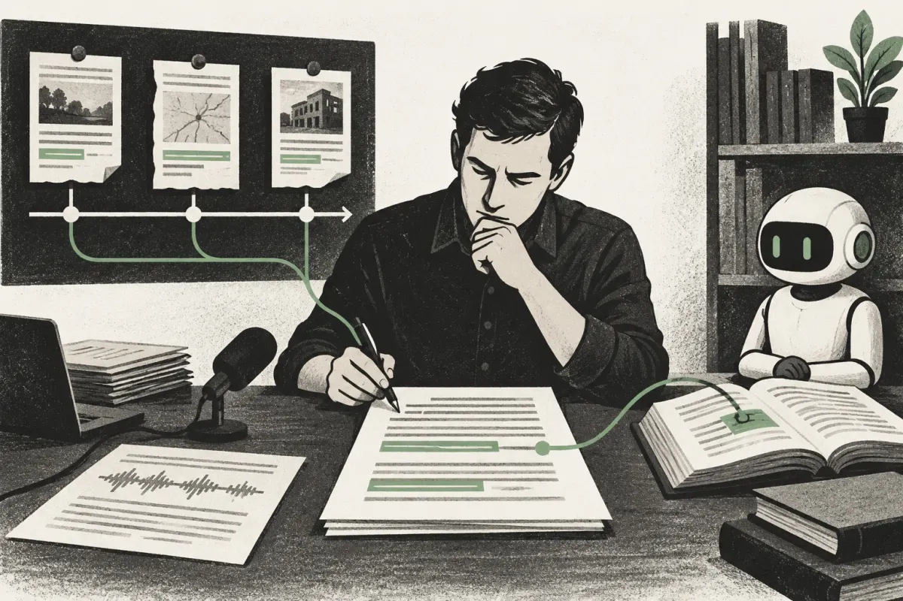
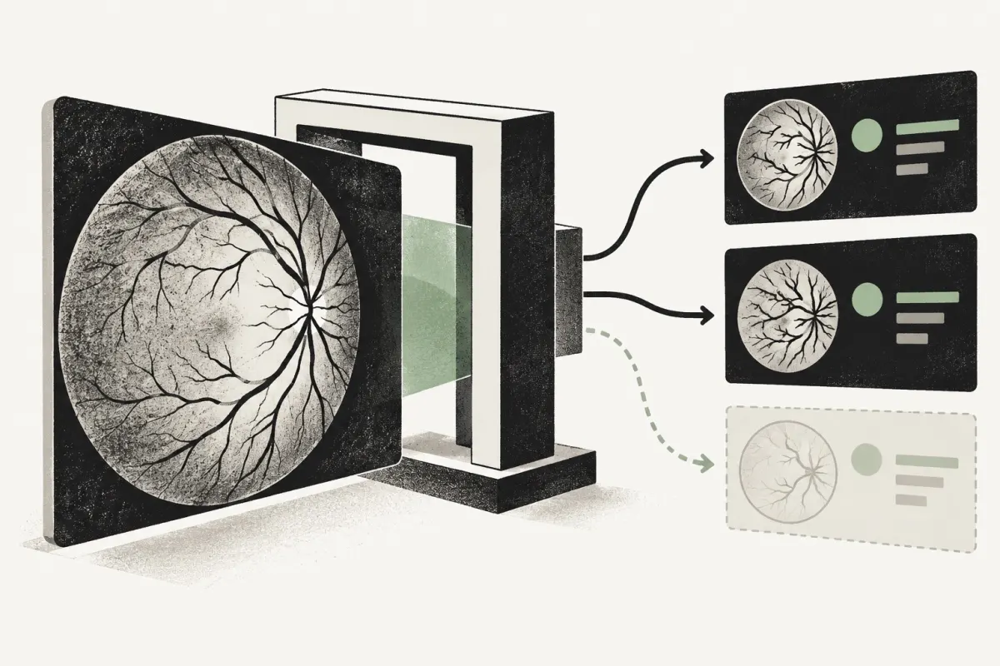
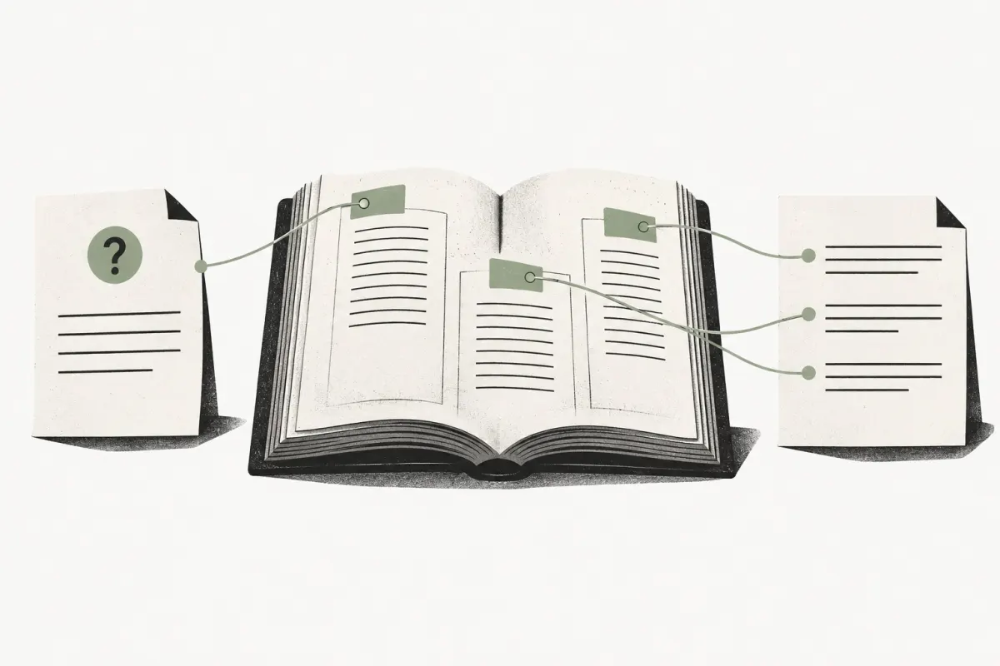

01 · The turn
AI made code cheap. Judgment got expensive. I moved where judgment lives.
Two years building AI systems taught me that producing an answer is easy, deciding whether it can be trusted is the work. I moved from writing most of the code to managing scope, technical risk, evaluation, and human review. The engineering judgment stayed: on one audit-sensitive extraction project, I rejected GenAI for fine-tuned OCR, deterministic rules, and a human threshold.
02 · Professional record
Delivery experience before the title changed.
AI/ML delivery since February 2025. Perfect10 is my current chapter, after engineering engagements where the hard part was making systems dependable enough to hand over.
Current chapter
Perfect10 · May 2026 · Present
2 yrsCareer timestamp
10+Projects delivered
3Professional engagements
Delivered
Kana Services
Computer vision · OCR
Feb 2025 · May 2026
Built
Bsmart A.I.
Multimodal workflows
Jun 2025 · Jan 2026
In progress
Perfect10
AI Project Manager · AI Engineer
May 2026 · Present
Professional record · separated from independent work
03 · Selected work
Client delivery · Perfect10 and client engagements
The systems around the AI matter too.
These records describe the delivery systems I owned as Project Manager and their status as of November 2026. On the newest one, I also took on the engineering.
Client and product names are withheld for confidentiality.
01 · In development · September 2026–present
On-premise regulation and financial analysis assistant
The assistant retrieves regulatory provisions and analyzes financial statements without moving client data off its own infrastructure.
Client benchmark · 137 questions
70% → 91% Correct regulatory references
79 of 113 scorable questions in the initial test; 97 of 107 in the final test.
- 20/34
- previously problematic questions answered as expected in the final test
- 94/137
- answers fully matched the expected content in the final test
What I led and built
- Built the regulatory grounding layer of the agent harness, connecting tool calling and context management to exact-article lookup, hierarchy-aware hybrid retrieval, and cross-level reranking across a corpus of 6,500+ pages.
- Used LLM-as-a-Judge to score responses against reference answers in an earlier benchmark, separate from the client’s 137-question evaluation above.
- Built a rule-based tool for calculating financial ratios. In a separate financial-answer evaluation, accuracy rose from 83% to 92% and response latency fell 47%.
- Tuned on-prem LLM serving with SGLang on a single GPU. In a load test with 64 concurrent users, throughput rose from 1,997 to 3,959 tokens per second.
How regulation search works
-
Find the provision
- Exact article
- Look up the named article directly when available.
- Topic search
- Search each regulatory level, combine keyword and semantic matches, then rerank by article and return up to 30.
- Assemble the evidence
Pass the article text, its status, and available explanations, annexes, or replacements to the model.
- Answer from the evidence
If a named regulation isn’t in the corpus, say so.

02 · Completed · May–September 2026
Creator Operations Workspace
To prepare a creator review, teams used to collect screenshots from social profiles and analytics dashboards one by one. The workspace brings profiles, analytics, and AI-generated insights into one dashboard.
700+talent profiles
95%less time spent preparing creator reviews
What I led
- Defined what teams record for each creator, including rates, content niches, and who owns the next follow-up.
- Led requirements, engineering coordination, and user acceptance testing for the creator review workflow.
- Defined role-based access for updating creator records and set what information must be captured before a review.
Designed impact Talent and commercial teams can review the same creator record before shortlisting or briefing.

03 · Completed · June–September 2026
Human-Governed Assessment Advisory Platform
The platform uses rule-based scoring for OCEAN and DISC, then drafts an LLM-assisted interpretation for HR review. It does not make hiring decisions.
0.734–0.827 OCEAN · reported reliability across dimensions
0.795–0.868 DISC · reported reliability across dimensions
What I led
- Worked with two HR experts to define scoring and interpretation rules.
- Defined how reverse-scored items and responses that contribute to multiple traits affect the assessment scores.
- Set limits on what the generated report could infer from scores and readiness information.
- Kept interpretation and hiring decisions with HR.
Designed impact HR can use the scores and drafted interpretation as a starting point for a candidate discussion.

04 · In UAT · July 2026–present
Investigation Casework and Document Intelligence Platform
This document intelligence workspace brings interview transcripts, case materials, and draft documents together. Investigators use RAG to retrieve reference material and review it before drawing conclusions.
3,100+pages in the retrieval corpus
33documents in the readiness model
2regional languages included in transcription tests: Javanese and Sundanese
What I led
- Defined the case review workflow (Bedah Perkara) to flag inconsistent accounts, missing evidence, and potentially relevant provisions, and to show which documents are still needed.
- Coordinated requirements for live multilingual transcription, AI-suggested interview follow-ups, and document drafting and validation.
- Set access, activity logging, and review requirements so investigators can check AI-assisted output and remain responsible for conclusions.
Designed impact Investigators can review evidence gaps and document readiness alongside the case timeline before deciding what to pursue next.
Independent work · research and personal builds
Three places where an average can lie.
Three systems, one recurring question: where does the output stop being trustworthy?
01 · Published research · LLM-as-a-Judge · Reliability & Bias
When two LLM judges disagreed
I compared two LLM judges across repeated essay-scoring runs. The more consistent judge failed to return parseable scores in 25.4% of cases. I also simulated routing lower-confidence scores to human review.
150 essays · 2 models × 5 runs
02 · Computer vision · Model training
Accuracy was not the final review
I fine-tuned EfficientNetB0 to classify eye diseases from fundus images. On a held-out set of 844 images, it reached 90.64% overall accuracy and 80.33% glaucoma recall.
EfficientNetB0 · 4,217 images · research experiment
03 · AWAM · Legal RAG prototype
Answers need sources.
AWAM reformulated everyday questions for legal search and showed the sources used in its answers. The demo is offline while I rebuild the source corpus.
Corpus rebuilding · not legal advice
Research note / Explainability
Read note ↗
What Grad-CAM highlighted in an Alzheimer’s classification experiment
Selected work · evidence inspected
04 · Field record
Built under pressure. Explained in public.
Competitions tested the team. Invited sessions tested whether I could explain the decisions without hiding behind model jargon.
Team execution
Three placements with Jaya Koding
Two first places. One second place. One team shipping against the clock.
1st · FAST Programming Problem Solving 2024
Trunojoyo Madura University · East Java
Read story ↗
1st · INVFEST X ISF 9.0
Telkom Purwokerto University · Central Java
Read story ↗
2nd · PROXOCORIS International 2025
Klabat University · North Sulawesi
Read story ↗
Public communication
Selected invited sessions, one recurring question
How do people decide what to trust when AI is involved?
AI & feed literacy session
“Why is my TikTok FYP so strange?”
SMP Negeri 1 Pengadegan · Purbalingga
Hosted with KKN Kelompok 100 Desa Tegalpingen, Muhammadiyah University of Purwokerto
Read story ↗
When AI Goes Viral: Creativity or Manipulation?
Soedirman Digital School · Jenderal Soedirman University
Read story ↗
AI and The Future: AI Potential in the Digital World
Software Engineering Event 9th · Telkom University Purwokerto
Read story ↗
Field proof · verified